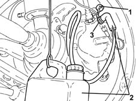
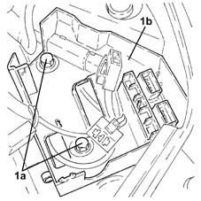
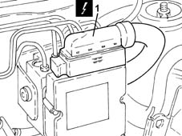
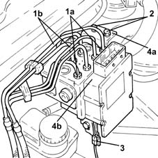
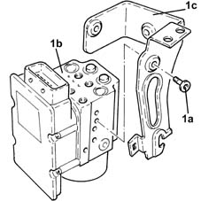
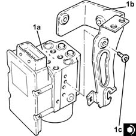

3340A12 A'B.S. system. - electronic and hydraulic CONTROL UNIT R.R.
- Path
- Procedures > 33 BRAKING SYSTEM > 3340 A(B.S. ANTI-LOCK BRAKING SYSTEM .) > 3340A abs check/adjustment devices > 3340A12 A'B.S. system. - electronic and hydraulic CONTROL UNIT R.R.
- Kind
- repair procedure (removal / refitting; the operation number is the code)
- Applies to
- all engines; all production periods
- Interactive page
- https://sloeber94.github.io/elrnDB-lYpsln/en/#/2429185
Applies to: all engines; all production periods
 Removing
Removing
 Refitting
RefittingProceed with removal 5530B10 battery - r+r .
Proceed with removal 5530B52 Battery DRIP TRAY/SUPPORT - R.R. .
1. Remove the protective cap on the brake caliper bleed valve.
2. Connect the collection system (pipe and reservoir) to the bleed valve on the brake caliper.
3. Loosen the bleed valve on the brake caliper
Wait for the brake-clutch reservoir to drain.

Applies to: all engines; all production periods
Proceed with removal 5505A13 supplementary junction control unit in engine bay - r r .
1. Undo bolts (1a) and move engine bay junction unit (1b) aside after releasing the accelerator control potentiometer wiring from the bands.

Applies to: all engines; all production periods
1. Disconnect the electrical connection from the ABS electronic control unit.
 | Name | Connector |
|---|---|---|
1 | ABS control unit |

Applies to: all engines; all production periods
1. Undo the connectors (1a) and disconnect the rigid brake pipes (1b) from the A.B.S. hydraulic and electronic control unit.
2. Loosen the bolts fixing the ABS control unit to the body.
3. Release the electrical connection for the left front wheel rpm sensor from the ABS control unit mount.
4. Remove mount (4a) complete with ABS hydraulic and electronic control unit (4b).

Applies to: all engines; all production periods
1. Working at the bench, unscrew bolts (1a) and separate ABS hydraulic and electronic control unit (1b) from mount (1c).

Applies to: all engines; all production periods
Refitting
Removing1. Assemble ABS hydraulic and electronic control unit (1a) to mount (1b) and tighten bolts (1c) to the specified torque.
 | Fastening | Component | Ø | Value (daNm) |
|---|---|---|---|---|
1c | - | HYDRAULIC AND ELECTRONIC CONTROL UNIT | M6 | (Support side) 0.5 ÷ 0.7 |

Applies to: all engines; all production periods
Refit the mount with ABS hydraulic and electronic control unit.
Connect the electrical connection for the left front wheel rpm sensor to the ABS control unit mount.
Tighten the ABS control unit mount bolts to the body to the specified torque.
| Fastening | Component | Ø | Value (daNm) |
|---|---|---|---|---|
- | Bolt | ABS CONTROL UNIT SUPPORT | M8 | (Bodyshell side) 2.2 ÷ 2.6 |
Connect rigid brake pipes to the A.B.S. hydraulic and electronic control unit and tighten the connectors to the specified torque.
| Fastening | Component | Ø | Value (daNm) |
|---|---|---|---|---|
- | Connector | BRAKE SYSTEM FITTINGS | M10/M12 | (A.B.S.) control unit side 1.4 ÷ 1.8 |
Connect the electrical connection to the A.B.S. electronic control unit.
Refit the engine bay junction unit mount, secure the electrical wiring to the bands and tighten the bolts.
Proceed with refitting 5505A13 supplementary junction control unit in engine bay - r r .
Proceed with refitting 5530B52 Battery DRIP TRAY/SUPPORT - R.R. .
Proceed with refitting 5530B10 battery - r+r .
Proceed with refitting 0010T64 brake and or clutch fluid check level and top up as necessary .
Proceed with refitting 0010T65 hydraulic brake system bleed air .
Topics linked from this page (6)
- 0010T64 brake and or clutch fluid check level and top up as necessary
- 0010T65 hydraulic brake system bleed air
- 5505A13 supplementary junction control unit in engine bay - r r
- 5530B10 battery - r+r
- 5530B52 Battery DRIP TRAY/SUPPORT - R.R.
- M50 ABS control unit ( FRONT )